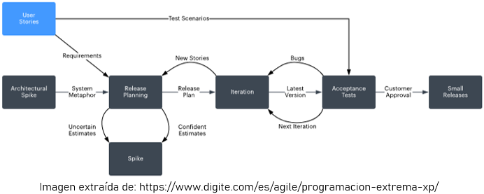
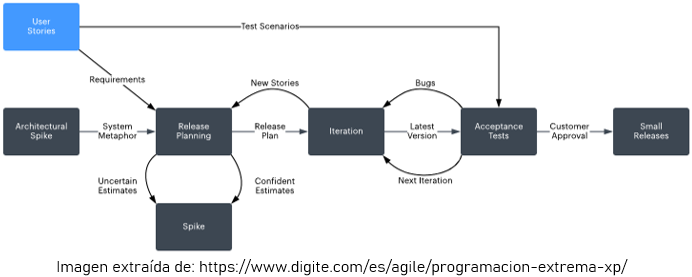

Planteamiento del problema
"Según la base de datos de IMBd se han realizado títulos audiovisuales, de las cuales son películas y el resto son capítulos de series de televisión."
"Es apenas evidente que ni en diez vidas que tuviésemos nos alcanzaría para ver y percibir, y mucho menos pensar, toda la producción cultural humana"
(JESÚS MILLÁN MUÑOZ, Mundiario. 28 de mayo de 2017)
La accesibilidad a los medios de difusión y producción cada vez mas extendida expone a los consumidores a una cantidad de información que crece descontroladamente. Por este motivo, los consumidores empiezan a precisar de ayudas automatizadas y ergonómicas que les permitan consumir responsablemente un contenido que les beneficie.
El problema anterior es especialmente percibido por los consumidores de películas. Y ya que estos representan una gran parte del público, dada la clásica tradición cinéfila de la sociedad del siglo XX, es un problema que debe ser resuelto lo antes posible por las grandes plataformas de distribución de contenido.
Metodologías de desarrollo
SCRUM
KANBAN
Extremme Programming
Decisión final

 
